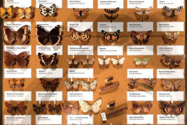

Word and phrase class
|  |
 |
Why classify by word and phrase class?There are a number of good reasons: |
- In the Second Edition of the Oxford English Dictionary there
are entries for 171,476 words.
The object of classifying words and phrases by class is to look at what function parts of the language perform. It's a basic way of making sense of the huge amount of data that a language contains. (Word class used to be called parts of speech and that may be how you first encountered the topic at school.) - There is some good evidence that all languages divide words and phrases in similar ways. It is hard to think of how one could construct a language which did not have items to represent things, attributes, actions, directions, people and so on.
- There is also some evidence that people think in terms of word and phrase class. That is to say, we divide reality into chunks that are represented in linguistic terms. If this is true, learners of the language need to know where to 'file' a language item when they encounter it.
| Imagine, if you will, entering a library to encounter this: | ||
 |
instead of this: |
 |
On the left, there is a just a pile of undifferentiated material.
You may be able, eventually, to find the book you are looking for
but your life will be made considerably easier if the librarians
have taken the trouble to organise things a bit better so you know
where to look for type of book, author, subject and so on.
Equally, a teacher may present a new word or phrase to you and you
may be able to remember what it means but, unless you know the
class of information it embodies, you life will be made much more
difficult when it comes to using the item accurately in your own
language.
 |
Nine word and phrase classes |
The line taken on this site is to divide words and phrases into nine distinct types. Here they are with some examples. The word classes in the examples are in bold black type.
| Word class | Examples | The function |
| Noun | Tell
Mr Smith Open a box Add some salt The army helped True love is rare |
Representing a thing, idea or person |
| Verb | He
arrived They fell over She looked up the word The book is on the shelf She appears happy |
Representing an action, a behaviour or a relationship |
| Adjective | The
blue
car The car is old The people involved The immediate, awful effect The last word |
Representing an attribute or characteristic of a noun |
| Adverb | He arrived
late She talked endlessly I frequently make mistakes He went upstairs She worked off and on |
Representing a manner, time or place that something happens or is |
| Pronoun | John loved
it They came to the party I did it myself The blue car is hers I want both |
Representing a noun |
| Preposition | Put it
in
the corner Go over the bridge It's underneath the paper She's in front of the garage I took a bus instead of a train |
Representing a relationship between a verb and a noun or two nouns |
| Conjunction | I came
because you asked me If you are tired, don't go She and her brother argued a lot I want either this one or the blue one I called but he was out |
Linking items together |
| Determiner | Do you want
some
tea? Give me half the money now Take my car I have no time She came with a lot of people |
Representing how we see an object
or person. They include words such as: a, the, an, some, any, all, another, both, this, that, these, those, my, our, his, her, whose, which, whatever etc. |
| Interjection |
Ouch! That hurt Yuk, that's disgusting Whoa! Blimey! There, there, don't worry |
Representing an emotion or feeling |
 |
Click here to take two short tests to see if you can identify examples of all nine word classes. |
Welcome back. Now we can look at why we include phrases as well as words in this section.
 |
Words vs. phrases |
You will also have noticed in the table above that some items are phrases rather than single words. Like this:
| Word class | Examples | Comments |
| Noun | Tell
Mr Smith Open a box Add some salt The army helped True love is rare |
Mr Smith
is a noun phrase made up of the determiner (Mr) and
the proper noun (Smith). All the other examples are single-word nouns but it is possible to have multi-word nouns such as notice board, desk lamp, computer keyboard and so on. |
| Verb | He
arrived They fell over She looked up the word The book is on the shelf She appeared happy |
Only one of these is a verb phrase rather than a verb as a single word. The verb look up is a phrasal verb meaning something like find for reference. |
| Adjective | The
blue
car The car is old The people involved The immediate, awful effect The last word |
There is one adjective phrase here, immediate, awful but it is also possible to have multi-word adjectives such as last-minute, eleventh-hour, downward moving and so on which act as if they were single words. Usually, multi-word adjectives are hyphenated. |
| Adverb | He arrived
late She talked endlessly I frequently make mistakes He went upstairs She worked off and on |
Many adverbs are single words and thousands of them end in -ly but some are phrases such as off and on, now and again, from time to time etc. |
| Pronoun | John loved
it They came to the party I did it myself The blue car is hers I want both |
Most pronouns are single words (as here) but it is possible to have pronoun phrases such as all of them, many of those and so on which combine the pronoun with determiners. Grammatically, such phrases perform the same function as single-word pronouns. |
| Preposition | Put it
in
the corner Go over the bridge It's underneath the paper She's in front of the garage I took a bus instead of a train |
Many prepositions are single words but there are many which are phrases such as out of, on to, prior to, in front of, at the back of and so on. |
| Conjunction | I came
because you asked me If you are tired, don't go She and her brother argued a lot I want either this one or the blue one I called but he was out |
Conjunctions of a particular sort (called correlators) are often separable phrases. Examples include, neither ... nor, hardly ... when, scarcely ... than and so on. |
| Determiner | Do you
want some
tea? Give me half the money now Take my car I have no time She came with a lot of people |
Determiners are usually single words but they are often combined with what are called pre-and post-determiners to make determining phrases such as half the, both those two, double the many and so on. |
| Interjection |
Ouch!
That hurt Yuk, that's disgusting Whoa! Blimey! There, there, don't worry |
By their nature, most interjections are single words but there are some phrases in common use such as now then, there, there, good grief, uh huh and so on. |
This guide is mostly about word class but it is important to
pause for a moment and consider the ways in which phrases also
perform functions in sentences which are the same as or very similar
to the way that words function.
For example, consider these two sentences:
- Cars halted outside
- Three old cars suddenly halted right outside
In the first sentence we only have three words and they perform these functions in the grammar:
- Cars is a noun meaning a type of motor vehicle and the only thing we can say about it is that it is plural (because there is an -s ending). It acts as the subject of the verb.
- halted is the verb and, because it has a -ed ending, we know that it is in the past tense.
- outside is an adverb telling us where the action happened.
In the second sentence, the structure is very similar but the information is a little richer:
- Three old cars is a noun phrase and it is made up, you now know, of a determiner, three, and adjective, old, and the noun cars. Grammatically, it still acts as the subject of the sentence. It performs the same function as the simple noun in sentence 1.
- suddenly halted is a verb phrase and is made up of the verb plus an adverb, suddenly, telling us the manner in which the cars halted.
- right outside is an adverb phrase which carries more meaning than just the word outside but it still acts to tell us where the action happened.
In sentence 2. all the items are phrases rather than single words but the grammatical functions remain the same. That is what is meant by phrase class as opposed to word class. There is a little more on this in the guide to syntax (next).
 |
Open and closed word and phrase classes |
This is an important distinction between:
- Open-class words
Some word and phrase classes can be added to at will. For example, we can invent, as and when we need them:
new verbs (such as google, text, binge-watch, troll, message and so on) to describe new activities or behaviours
new nouns (such as bling, spam, web-cloud, omnishambles and so on) to describe new devices, concepts or phenomena
new adjectives and adverbs formed from them (such as spritzily, skunked etc.) to describe the previously indescribable
We can also coin what are known as nonce words to suit our circumstances. For example, you will not find blandify or blandification in any dictionary but native speakers will have little difficulty recognising that it is a verb formed from the adjective bland and a noun formed from that verb. The verb means make bland and the noun means the action of making bland.
Interjections, too, are often made up on the spot to express our feelings. - Closed-class words
Other word and phrase classes are not so easily handled. We do not normally invent new determiners, prepositions, pronouns, and conjunctions.
Some words may fall out of fashion, such as thou, athwart or yonder but new additions are very rare indeed.
There is a good reason for this distinction:
Open-class words and phrases are lexical and
that means that they represent real ideas when they stand alone.
We can say, for example:
Go!
Ice?
Happy now?
Quickly!
Ouch!
etc. and, even when the word or phrase is the only item in the
sentence, it still carries real meaning.
Closed-class words and phrases are functional and
serve to make the grammar of the language work. When they
stand alone, they are meaningless so we are unlikely to say:
In
My
With
These
In front of
etc. unless the hearer can reconstruct the meaning from something
already said.
 |
Implications for teaching |
It was said at the outset that there is evidence that word and phrase class is a universal of languages and most will show the same or very similar distinctions. It is very important, therefore that you:
- Focus learners on word / phrase class.
When you introduce a new item, you make it very clear what sort of item it is. Do not expect your students to guess.
Use, on the board and on handouts, for example:
n. to mark nouns
v. to mark verbs
adj. to mark adjectives
adv. to mark adverbs
pron. to mark pronouns
prep. to mark prepositions
conj. to mark conjunctions
det. to mark determiners
That's the way most dictionaries do it. - Consider function before form.
Think about what the word is doing, not what it looks like. For example, in:
He's a friendly person
the word friendly is an adjective even though it ends in -ly in the way thousands of adverbs end (such as slowly, helpfully and so on).
And in:
He put it outside
the word outside is an adverb, but in:
He put it outside the door
the word outside is a preposition linking the verb, put, with the noun phrase the door.
And in:
Do you have much money?
the word much is a determiners but in:
Do you want much?
the word much is a pronoun.
And in:
She banks over there
the word banks is a verb, but in:
The banks are overflowing
the word banks is a noun with a very different and unconnected meaning.
- Link word classes logically.
If you introduce a new noun, think about what adjectives can describe it and vice versa. If, e.g., you introduce the adjective doable, make sure it's clear to your learners that it can be applied to a job, a task, an arrangement, a journey and so on but that you cannot apply it to a book, a computer or a picture.
If you introduce a noun such as downpour, be aware that you can describe it as heavy, torrential, sudden and so on but not as light, drizzly, slow or pleasant.
If you introduce a new verb, think about what can do it: people, places, buildings etc. Some verbs, such as construct and clarify can only be done by animate subjects, others, such as spark or foam can only be done by certain types of inanimate subjects.
And so on. - Present new items in context.
You may successfully tell a students, for example, that a text is a short written message sent on a 'phone but that will only work in one setting such as
She sent me a text telling me where to meet
It will, however, not work for a context such as:
She sent me the text of her presentation
because that is a different, albeit connected, sense of the noun.
Fully to understand a word or phrase requires encountering it multiple times in clear contexts so that the meaning is made transparent.
This has been a short and severely edited guide to a complex set
of topics and ideas. It is enough to get you started but you
will need to know more very soon.
From here, you can look at each word class
individually to see what they do and how they function. Use
this menu:
| verbs | adjectives | adverbs | pronouns | prepositions | conjunctions | determiners |
Click here to go to the next section on Syntax.